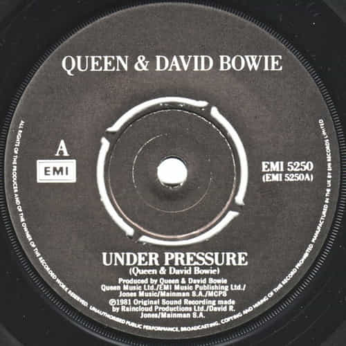
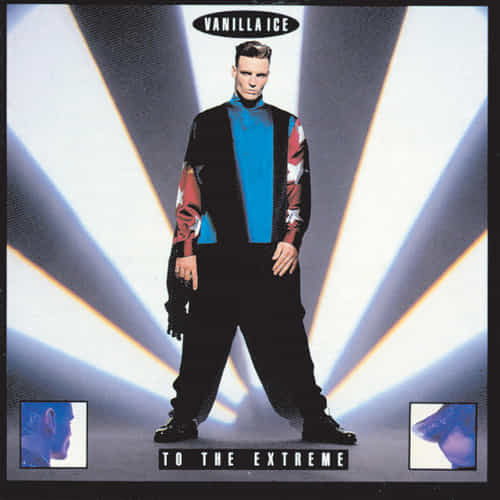

Under Pressure
Queen & David Bowie (1981)

MUSIC DNA / 1981 → 1990
一段熟悉的声音，怎样成为另一首歌的起点？先听 Queen & David Bowie，再听 Vanilla Ice。
原作以这对歌曲说明声音的继承：Under Pressure 的低音线被用于 Ice Ice Baby。
正在载入两段音频…
点波形可定位；也可用滑块方向键微调。顺序试听结束后自动停止。
Queen & David Bowie (1981)


Vanilla Ice (1990)
原作音频摘录：A 7 秒 · B 8.5 秒